superpowers vs grill-me：同一个需求实测，差距到底在哪？
大家好，我是小林。
之前给大家分享过一篇 vibe coding 神器 grill-me 的文章，发出去之后，评论区有读者问了个问题，superpowers 和 grill-me，在具体应用场景和使用体验上应该怎么比较？
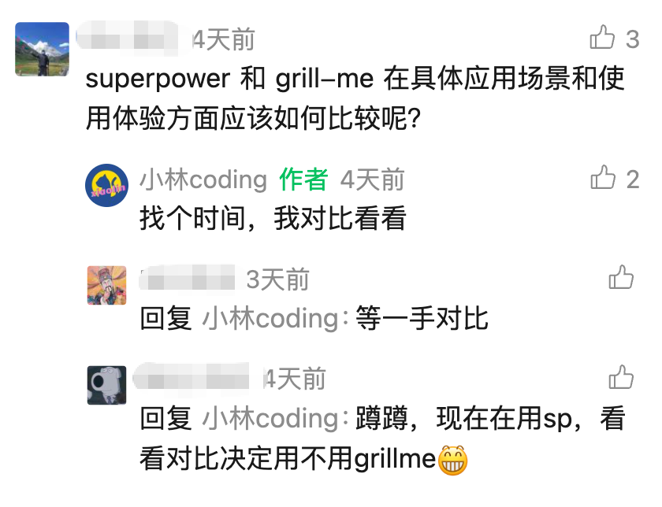
底下还有好几位同学蹲后续，那这篇就是来还债的。
说实话，这个问题问到点子上了。这俩经常被放一起提，都是「让 AI 动手写代码之前，先跟你把需求聊清楚」的路子。
但要真让我说清楚差在哪，我当时心里也没有特别硬的答案，因为 superpowers 我装是装了，但是还没有具体对比过。
于是趁着周末，我把对比实验跑完了。过程先放一边，直接看结果。
同一句需求，「我想做一个网页版的地铁跑酷式小游戏，人物一直往前跑，躲障碍、吃金币那种」，丢给同一个 Claude Code，同一个模型（claude fable 5），唯一的区别就是分别用了这两个 skill。
grill-me 交出来的游戏长这样。
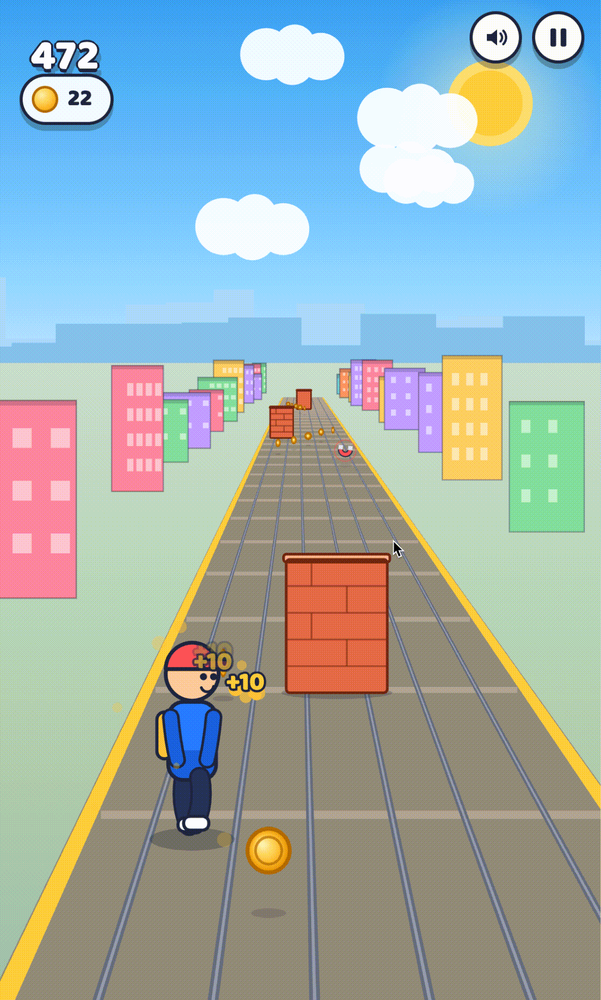
superpowers 交出来的长这样。
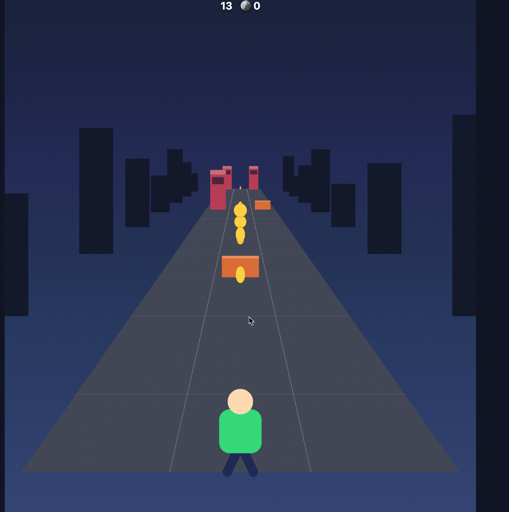
一边蓝天白云，戴红帽的小人连影子都画了。另一边深蓝夜色里，绿方块小人躲着黄方块障碍。
需求一字不差，成品隔着一个次元。
差距哪来的？先卖个关子，不是哪边模型更聪明，是有一个关键决定，一边专门停下来问了我，另一边替我做了主。看到后面你就知道是哪个决定了。
对了，那句需求是我故意说得很模糊的，视角、操作、美术风格、难度曲线全部留白，就看它俩各自怎么把这些空缺问出来。
这俩压根不是一个物种？
讲过程之前，得先掰清一个误会，很多人以为 superpowers 和 grill-me 是同类工具。
其实不是。
grill-me 上篇讲过了，一个只有三句话的 skill，核心就是「往死里盘问你，一次只问一个，能翻代码搞清楚的别来烦我」。它是一把手术刀，单点，锋利，干完一件事就收。
superpowers 完全是另一个量级的东西。它是海外一位资深开发者 Jesse Vincent 做的，这个插件里塞了二十多个 skill，覆盖一条完整的开发流水线，brainstorming 先跟你聊需求，聊完写设计文档，然后 writing-plans 把活拆成一个个小任务，再派子代理逐个实现，中间还强制走测试驱动开发和代码审查。
说人话就是，grill-me 是一个工具，superpowers 是一整套工作方法论。装 grill-me 是多了个帮手，装 superpowers 是给 Claude Code 请了一位流程严格的工程经理。
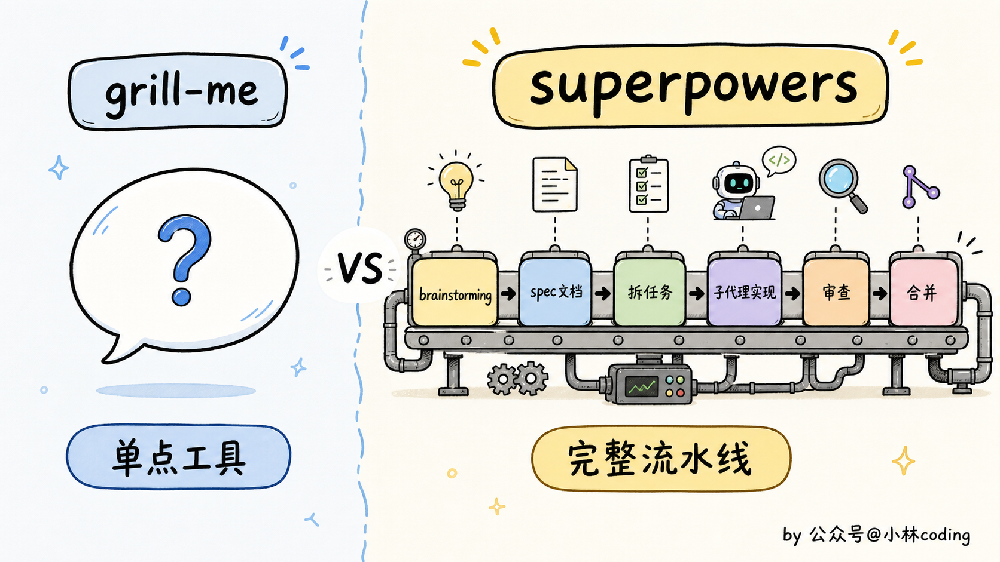
装法也不一样。grill-me 是社区 skill，上篇讲过，一行 npx 命令，跑完在列表里勾上 grill-me 就行。
npx skills@latest add mattpocock/skills
superpowers 现在进了 Claude Code 官方插件市场，也是一行命令的事。
/plugin install superpowers@claude-plugins-official
所以这场对比里，真正跟 grill-me 同台的是 superpowers 里负责问需求的那个 skill，叫 brainstorming。它俩干的是同一件事，都是在写代码之前，把你脑子里的糊涂账逼出来。
好，上需求。
同一个小游戏，两边各审一遍
先看 grill-me 怎么审
先测 grill-me，把那句需求原样丢给 /grill-me。
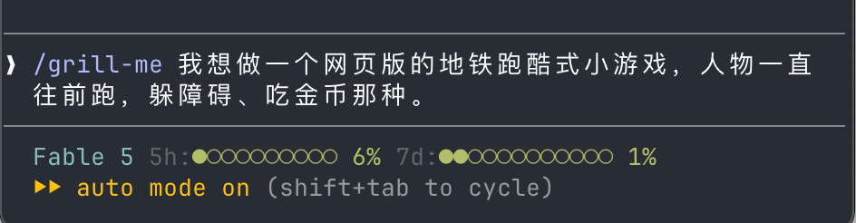
它的第一个动作还是老规矩，先翻家底。发现目录是空的，它说了句「全新项目，没有可以探索的代码，那我们从头把设计聊透」，然后开问。
第一问就是最上游的岔口，伪 3D 三车道，还是 2D 横版？它推荐前者，理由是「三车道左右切换是这个玩法的灵魂」。
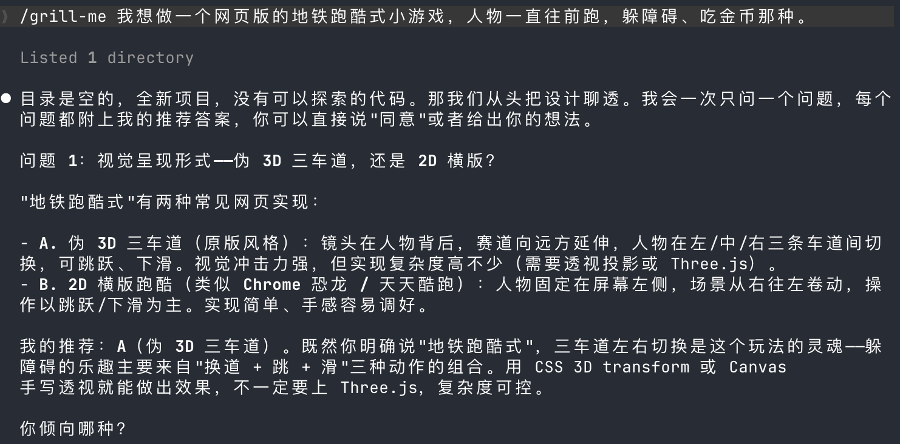
接下来的节奏，熟悉 grill-me 的同学都知道了，一次一问，每问带推荐答案，顺着设计树一根枝丫一根枝丫往下走。视角定了才问渲染技术，动作集定了才问障碍种类，前一问的答案框住后一问的选项。这次它总共问了我 12 个问题，我有 11 次直接回「同意」。
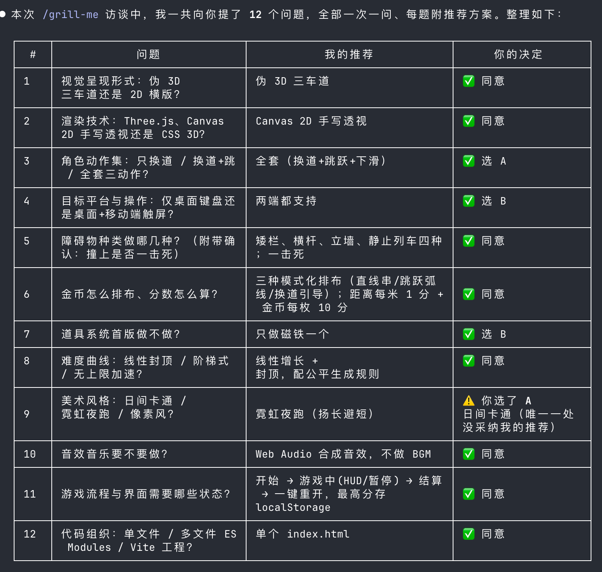
唯一一次没同意，是第 9 问，美术风格。
这一问值得单独说。它给了三个选项，明快日间卡通、霓虹夜跑、像素风。它推荐霓虹夜跑，理由说得相当诚实，「坦白说这是扬长避短的选择，我们没有美术资源，全靠代码画，夜色也天然隐藏远处细节的缺失。」
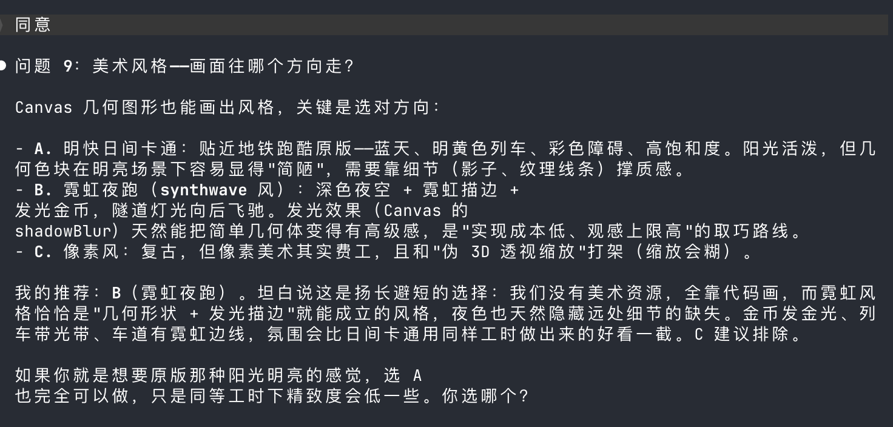
讲真，这个理由说服我了一半。但我就是想要地铁跑酷原版那种阳光明媚的感觉，于是全场唯一一次，我拒绝了它的推荐，选了日间卡通。
它也没硬劝，回了一句「好，那我在细节上多下功夫补质感，人物和障碍加投影，列车画窗户和光泽线，天空做渐变加云」。
记住这个瞬间，后面有用。
12 问用了 16 分钟。问完它给了一张「设计共识总览」，把定下来的东西和明确不做的东西（排行榜、角色商店、迎面列车，全部留二期）列了一遍，我回「确认」。
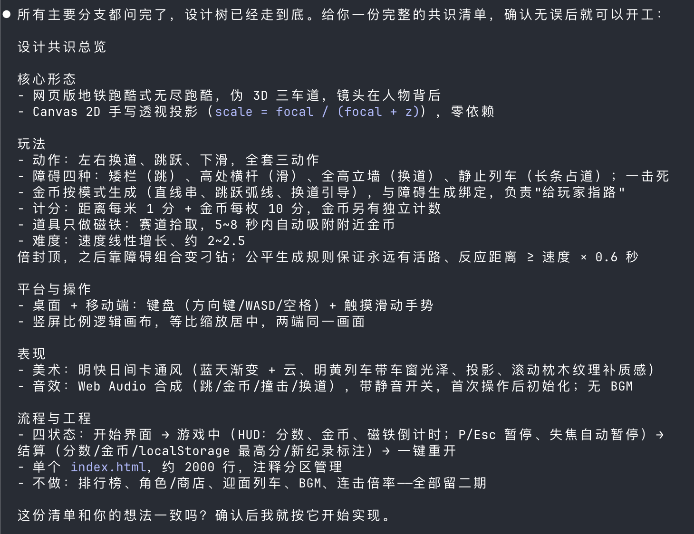
然后等待不到十分钟，一个 51KB 的 index.html 一次成型。从发需求到验证完毕，全程 30+ 分钟，其中有一半时间花在审问上了。
成品就是开头你看到的那版蓝天白云，下面这一张就是开始界面，蓝天白云，戴红帽的小人，连操作说明都排得整整齐齐。
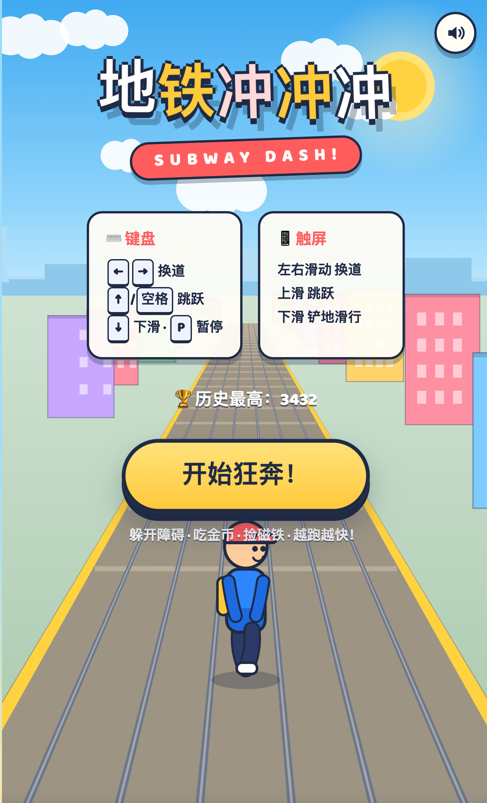
有一点让我觉得很好笑的是，做出来的下滑操作的动作设计，有一种很滑稽的感觉。
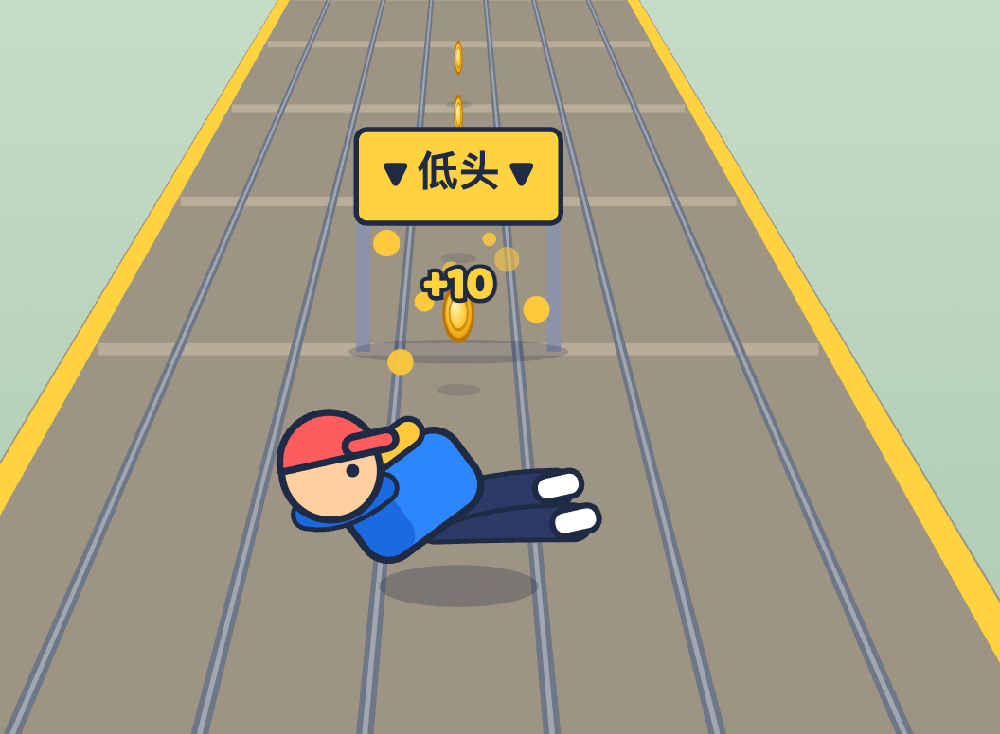
撞到障碍物的时候，也会有挂掉的表情。
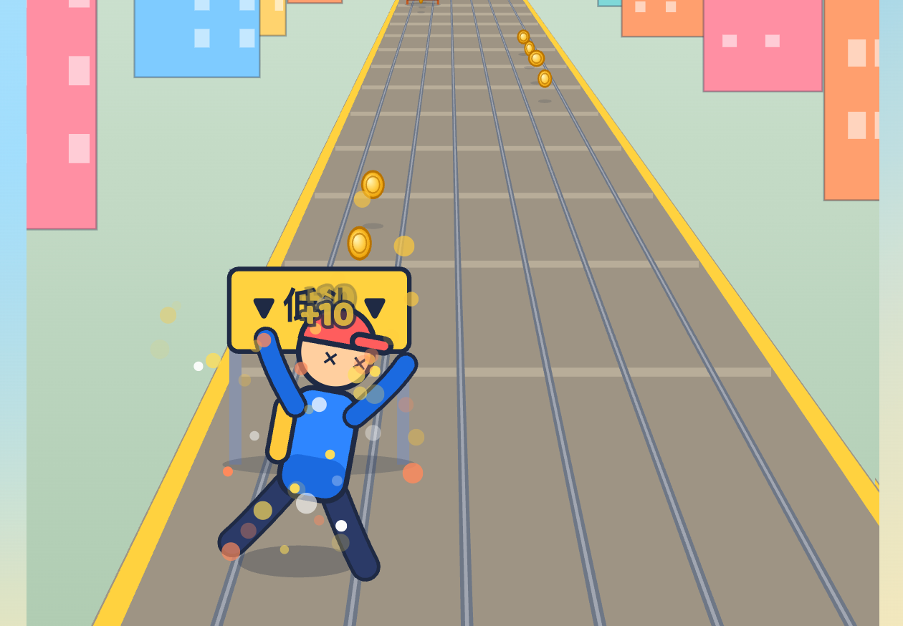
游戏玩起来没有啥问题
对了，收工之后我特意看了眼目录，除了这一个 html 文件，什么都没有。
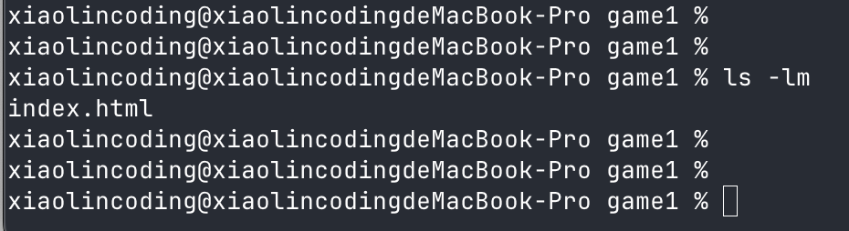
没有 git，没有文档，没有计划。
也就是说，前面 12 问敲定的那一堆设计决定，它一个字都没落到文件里，全部只存在于我和它的这场对话里。
对话在，共识就在。哪天对话记录没了，这些决定就只剩代码本身能证明了。
再看 superpowers 怎么审
轮到 superpowers。另开一个空目录，敲 /superpowers:brainstorming，同一句需求原样发出。
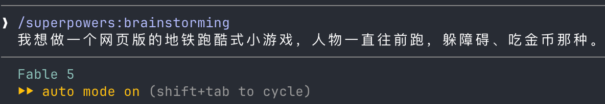
它也是先翻目录再开问，但问法完全是另一个画风。不是一行行的文字问答，是选项卡片，光标挑一个回车就行，还有多选题。
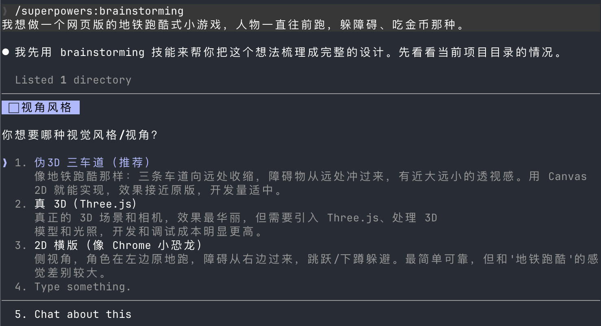
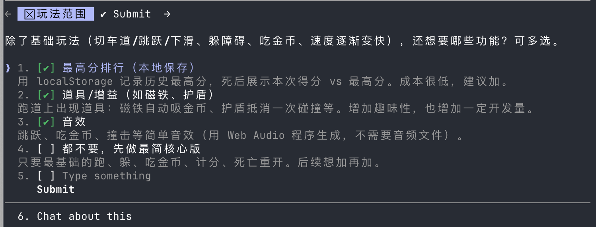
最关键的差别是数量，它只问了 4 个问题。视角、目标设备、要哪些附加功能、技术栈，完事。
你以为它问得少是漏了？其实不是，它把很多决定悄悄打包进选项里了。就说技术栈这一问，推荐项的说明文字里带了一句「美术全部用 Canvas 程序绘制，不需要图片素材」。
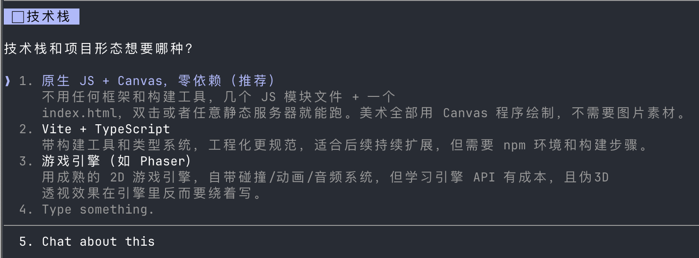
看清楚了吗？grill-me 拿美术风格专门问了我一整轮、还被我否了一次的那个决定，在这里就是选项说明里的半句话。我的游戏长什么样，它替我定了。
开头卖的那个关子，谜底就在这半句话里。两版游戏一个次元的颜值差距，不是能力问题，是一边把美术风格当成了必须问你的决定，另一边把它当成了不值得打扰你的默认值。
4 问之后，它先甩出三个技术方案让我挑，然后一口气输出了完整设计，文件结构、玩法机制、渲染方案、错误处理、测试策略，一屏都放不下。
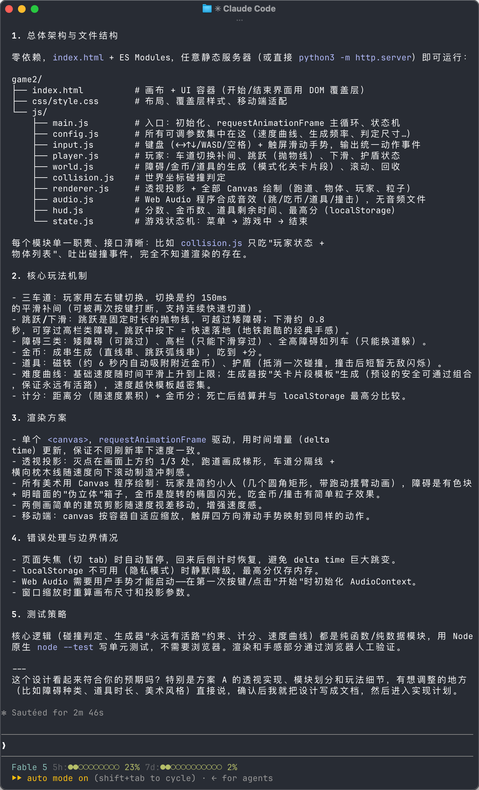
我回「确认」。接下来发生的事，grill-me 那边一件都没有。
它先把设计写成文档，提交到 docs/superpowers/specs/ 目录，还自查了一遍有没有前后矛盾。注意，我从头到尾没提过 git，它自己 git init、自己 commit，提交信息还写得规规矩矩。
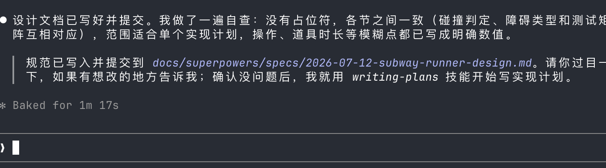
然后自动进入下一个 skill 写实施计划，10 个任务，54 项单元测试，16 项浏览器人工验证清单，每个任务都是「先写失败的测试，再写实现」的完整循环。写完问我，执行方式选哪种？我选了它推荐的子代理模式。
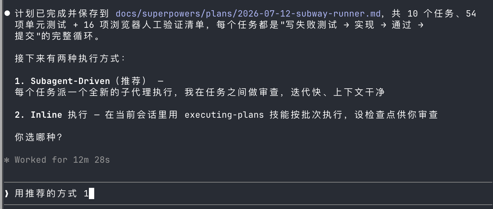
之后它开了条功能分支，开始流水作业。每个任务派一个子代理实现，完成后再派一个子代理审查，审出问题就派第三个去修。整个晚上它一共派了 24 个子代理。
我基本插不上手，也不需要插手。
然后，到了半夜，它在第 5 个任务上卡死了。子代理没了动静，接着连 API 都断了。我等了一会没恢复，睡觉去了。
第二天早上我喊了句「任务继续」，它清掉残留文件重新派了个子代理，一分钟干完卡住的任务，接着往下跑。
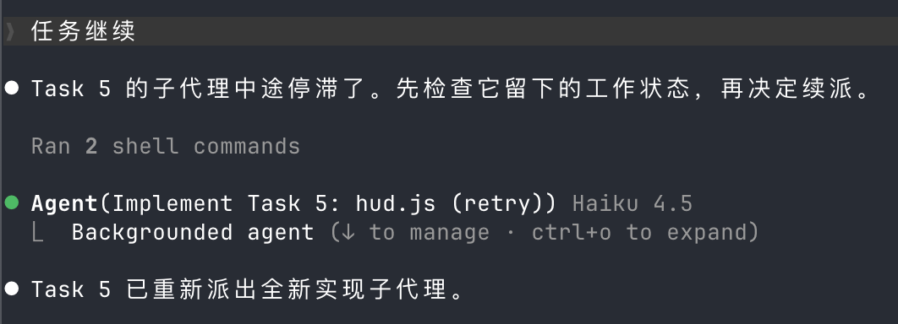
全部跑完，成品就是开头那个深蓝夜色版。下面这一张是游戏开始介绍页，相对比较简陋
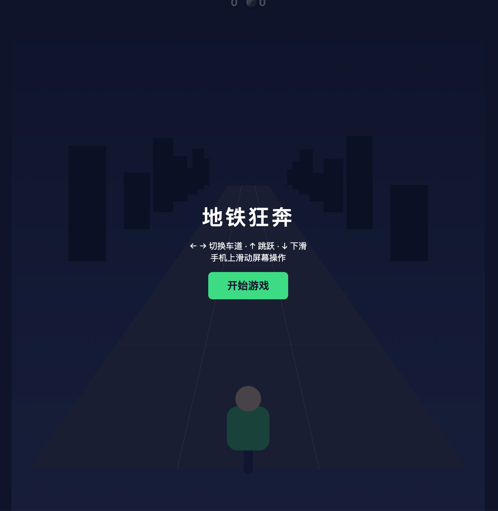
游戏是真能玩，跳跃下滑换道都利索，但跟 grill-me 那版放一起看，就是几个纯色几何块在跑，一眼素颜。
对了，跟 grill-me 一样，收工后我也看了眼它的目录。这边完全是另一番景象，一套正经的工程结构。
game2/
├── index.html
├── package.json
├── css/
├── js/ # 10 个模块，玩家、碰撞、渲染、音效…各管各的
├── tests/ # 8 个测试文件，55 个用例全过
├── docs/
│ └── superpowers/
│ ├── specs/ # 聊需求聊出来的设计文档
│ └── plans/ # 拆好的 10 个任务实施计划
└── .superpowers/
└── sdd/ # 每个子代理的任务简报、完成报告、审查 diff
重点看 docs 目录，当时聊需求定下来的每个设计决定、后来拆出来的任务计划，全都变成文档留在了项目里。
再配上 14 个 git 提交，这个游戏是怎么一步步做出来的，整个过程随时可以翻旧账。
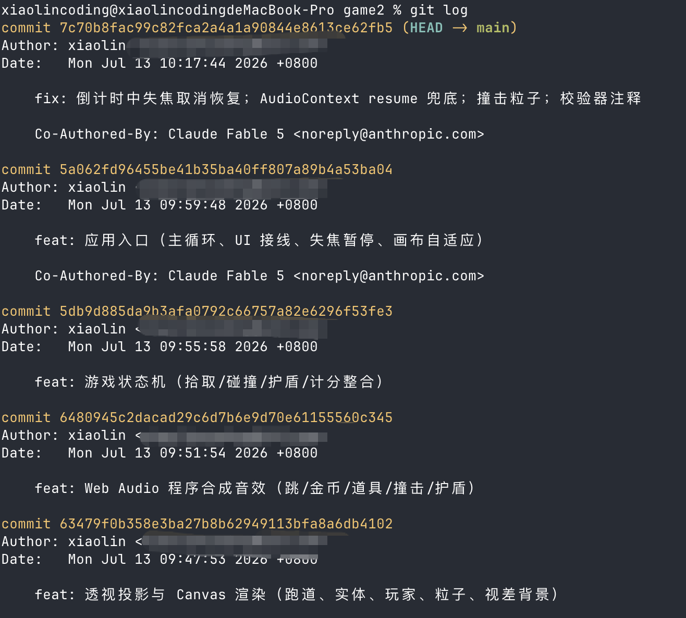
哪天我想改玩法，把设计文档丢给一个新会话接着聊就行，不用从头再讲一遍需求。
所以论后续的可维护性，superpowers 这版是会更好的，因为有设计文档的落地。
过几个月回来接着改，人早忘了当初为什么这么设计，设计文档翻开就有答案，当初定了什么、明确不做什么，白纸黑字。哪次改动出了问题，14 个提交记录一步一个脚印，回头一查就能定位到。
这些东西对人有用，对 AI 更有用，新会话里的 Claude 把档案一读，对项目的理解直接就位，改起来不容易跑偏。
grill-me 是问完就走、片纸不留，superpowers 是把整个开发过程给你归了档。
体验到底差在哪？
两边跑完，数据摆在一起是这样的。
| grill-me | superpowers | |
|---|---|---|
| 提问数 | 12 问，一次一问 | 4 问，选项卡片 |
| 我拍板的次数 | 13 次 | 8 次 |
| 留代码下的东西 | 只有代码文件 | 代码文件+测试文件+设计文档+git提交记录 |
| 耗时 | 32 分钟 | 约 2 小时（不算卡死那一晚） |
但数字背后的差别，我觉得是三层。
最直观的一层，是问的目的不一样。
grill-me 的 12 问，是要把每个决定都逼到你面前，逼你亲手拍板每一处细节。
superpowers 的 4 问，是为了凑齐开工所需的最少信息，剩下的它用「合理默认值」补齐。所以我那两版游戏的颜值差距，根源不在模型能力，在于一个问了、一个没问。
再往下挖，是问完之后活归谁。
grill-me 问完就退场，不写文件不碰 git，设计共识只活在对话里，接下来是直接开干还是转身进 Plan Mode，你自己定。
superpowers 问完才刚刚开始，spec 文档、任务计划、强制 TDD、双重审查，一整条流水线等着你。它留下的那堆文档和提交记录，海外用户管这个叫 paper trail，纸质痕迹，事后翻旧账、换个会话接着聊都靠它。
最根子上的一条，是谁配合谁。
grill-me 招之即来挥之即去，你的工作习惯一点不用改。
superpowers 是有自己规矩的，它自作主张 git init，它决定开分支，它要求测试先行。装了它，等于接受它那套工作方式。
而且按它的设计，这套流程还是自动触发的，我这次是手动敲的命令，但正常情况下你只要说一句「我想做个什么」，它就自己跳出来接管了。
也有人说它最狠的就是这点，没有复杂度阈值，改个小东西它也想给你走全套流程。
有个老哥的总结很到位，大意是「干大活是真行，干小活是真折磨」。
最后，到底装哪个？
先说我的答案，大多数人先装 grill-me。
它轻，不侵入，不改变你任何习惯，需要时喊一声，问完就走。我们可以先用「grill-me 捋清楚想法，再进 Plan Mode 开干」，日常的活基本够用了。这次实测它半小时出的东西，完成度真不低。
superpowers 适合另一种时刻，正经项目，动的地方多，返工代价高，或者你就是想要那份 paper trail，要文档、要测试、要提交记录齐齐整整，方便日后回溯和团队交接。这种时候它那套仪式感就不是负担了，是保险。但拿它做小需求，你会被它的流程烦死，这不是它不好，是杀鸡用了牛刀还非要走宰牛的流程。
要我用一句话收这个对比，就是下面这句。
grill-me 问完，活还是你的。superpowers 问完，活就是它的了。
一个逼你把心思想清楚，一个只需要你点头。
哪个更好？看你那天想当谁。
今天分享就到这里，我们下一篇见！